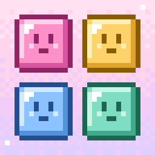

말랑 픽셀 블록
광고 없는 오프라인 픽셀 블록 퍼즐
어떻게 해요?
아래 블록 3개를 끌어서 8×8 판에 놓아요. 가로나 세로 한 줄을 채우면 펑 하고 지워져요. 여러 줄을 한 번에, 또는 연달아 지우면 콤보 점수가 붙어요. 더 놓을 곳이 없으면 끝나요.
자주 묻는 것
소리·진동 끄기: 오른쪽 위 메뉴(≡)에서 켜고 끌 수 있어요.
기록이 사라졌어요: 기록은 기기 안에만 저장돼서 앱을 지우면 함께 지워져요.
문의: App Store의 말랑 픽셀 블록 페이지에 있는 개발자 연락처로 보내 주세요.